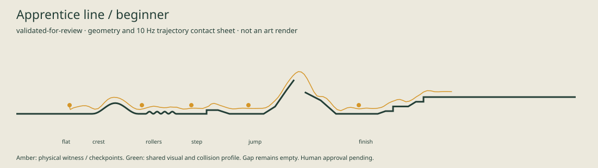
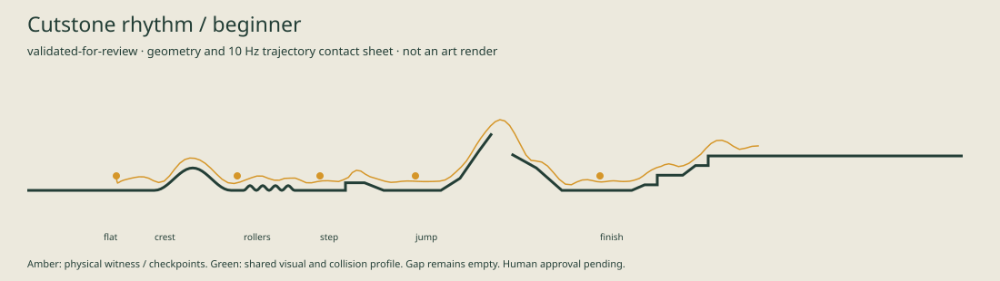
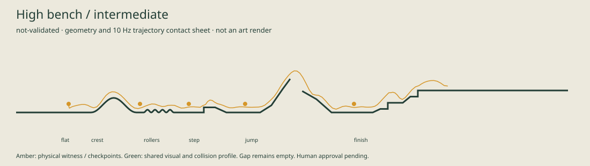

Apprentice line
validated-for-review / human approval pending

Staged candidates. No approval or publication. The curated Works Line remains the default.
validated-for-review / human approval pending

validated-for-review / human approval pending

not-validated / human approval pending
